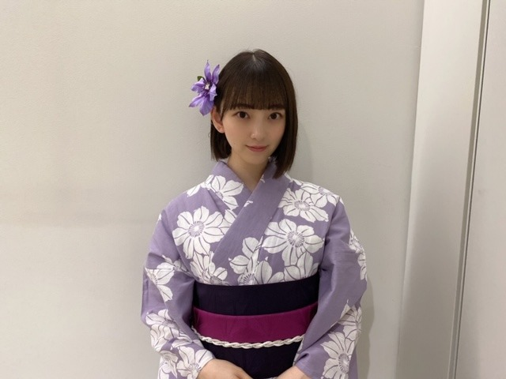

2020/0831Monはちがつまつ
こんばんは
エー！夏もうおわるってほんとですか
明日から9月ですか
夏らしいことはできてませんが切り替えて
秋冬を楽しみたいと思います
そんなこんなで
もう秋冬服をチェックしはじめています☺︎
今年はブラウンやアイボリー系多めの
ちょっと古着も混ぜたヨーロッパの秋冬ファッションをイメージしたいなぁと思っています
とりあえずおっきいメガネを探してます
トレーナーもかわいいし
ニットもかわいいし
最近はスカートよりデニムなどパンツ系が好き

今年はお仕事で3〜4回
浴衣を着ました
それが夏の思い出かなぁぁ
男の人にも甚平か浴衣どちらでもいいので
着てほしい派ですね
日本男児って感じが素敵です
プライベートでも全然着てほしいです
みなさん！もう夏は終わりますが！笑
何卒よろしくお願いします！
ちなみに
たまのごほうび の玉緒くんは
私服で花火大会に来るのだけど
そこもまた不器用ポイントでかわいいでございます
でもやっぱり浴衣みたい...よ...

宵宵^ - ^
そういえば新しい漫画を電子書籍で購入
しました^ - ^
ほしとくず っていう少女漫画！
また感想書きますね

TGCまで食事気をつけなきゃー
では☺︎
2020/08/31 17:24
コメント(253)
おつかれん
私もほしとくず読んだことあります！
未央奈ちゃんたくさんブログ更新してくれてうれしい…
未央奈タオル届くの楽しみです
まだまだ暑いので体調の変化に気をつけてください

未央奈ちゃんたくさんブログ更新してくれてうれしい…
未央奈タオル届くの楽しみです
まだまだ暑いので体調の変化に気をつけてください
こんばんは。
気持ちはもう秋冬ですか。
先取は楽しいですね。

夏は終わりますが、今年は夏に限らず、
ほとんど何もやってない。２月のバスラ
で終了した感じ。もう１回２０２０年を
やりたい。
浴衣、なんともいえないいい色ですね。
浴衣というより、着物のグレード。
白抜きの花が上品です。
髪飾りも可愛い。
片耳出し、好きです。
気持ちはもう秋冬ですか。
先取は楽しいですね。
夏は終わりますが、今年は夏に限らず、
ほとんど何もやってない。２月のバスラ
で終了した感じ。もう１回２０２０年を
やりたい。
浴衣、なんともいえないいい色ですね。
浴衣というより、着物のグレード。
白抜きの花が上品です。
髪飾りも可愛い。
片耳出し、好きです。
みおな
来年だと神宮でライブだよねー。
8/31って大体、去年もそうだったし。
だからもう9月を迎える気がしなくてね。
いつのまにか8月が終わってる感じだよね。
来年だと神宮でライブだよねー。
8/31って大体、去年もそうだったし。
だからもう9月を迎える気がしなくてね。
いつのまにか8月が終わってる感じだよね。
今、台風８号が来ています。
既に那覇で停電しているところもあるようで。
ウチの辺りが停電になるのも時間の問題かと。
停電になる前にコメントを。
(^-^)
既に那覇で停電しているところもあるようで。
ウチの辺りが停電になるのも時間の問題かと。
停電になる前にコメントを。
(^-^)
ブログ更新ありがとう！
浴衣見れて良かった～♪
大きいメガネ似合うの羨ましい、、
これからも応援してます！
浴衣見れて良かった～♪
大きいメガネ似合うの羨ましい、、
これからも応援してます！
ブログ更新ありがとうございます！
ブログいっぱい更新してくれてありがとうございます
浴衣いいですよね〜
旅館に泊まった時に温泉入ってから着る浴衣がめっちゃ好きです。
未央奈さんの浴衣姿。めっちゃ可愛くて素敵です。
TGC楽しみにしています！
ブログいっぱい更新してくれてありがとうございます
浴衣いいですよね〜
旅館に泊まった時に温泉入ってから着る浴衣がめっちゃ好きです。
未央奈さんの浴衣姿。めっちゃ可愛くて素敵です。
TGC楽しみにしています！
未央奈ちゃんこんばんは☺️
今日は誕生日
夏の終わりを感じる日に誕生日は嬉しいけど少し切ない
浴衣似合う(〃^ー^〃)
俺も和装着たいな♪
明日もHAPPYを
お休みなさい(^-^ゞ
今日は誕生日
夏の終わりを感じる日に誕生日は嬉しいけど少し切ない
浴衣似合う(〃^ー^〃)
俺も和装着たいな♪
明日もHAPPYを
お休みなさい(^-^ゞ
八月末だからと夏が終わってくれるならそんなに涼しいことはない。
ブログ更新ありがとう！
未央奈ちゃんの浴衣写真可愛いよ！
8月も終わりですね！
9月では楽しく参りましょうね！
愛美より
未央奈ちゃんの浴衣写真可愛いよ！
8月も終わりですね！
9月では楽しく参りましょうね！
愛美より
未央奈ブログ更新ありがとう！
755で星とくずを紹介したらコメント拾ってくれて、しかも買って読んでくれるなんてめっちゃ嬉しいです
会長も副会長も可愛いです!!星谷先生が描かれる世界の人達はみんな優しくて可愛いよねー。
未央奈とは少女漫画の趣味がめっちゃ合うから握手会が始まったら語りたいな(*´ω｀*)
ふくふくより
755で星とくずを紹介したらコメント拾ってくれて、しかも買って読んでくれるなんてめっちゃ嬉しいです
会長も副会長も可愛いです!!星谷先生が描かれる世界の人達はみんな優しくて可愛いよねー。
未央奈とは少女漫画の趣味がめっちゃ合うから握手会が始まったら語りたいな(*´ω｀*)
ふくふくより
未央奈ちゃんこんばんは！ありがとうございます‼楽しみにしてます‼素敵です！ありがとうございます！頑張ります‼頑張って下さい！ありがとうございます
浴衣 とっても似合いますね。
超カワイイ～♪
９月も元気に頑張ってください。(*^-^*)
超カワイイ～♪
９月も元気に頑張ってください。(*^-^*)
未央奈ブログ更新ありがとう！
未央奈の浴衣姿いつ見ても可愛い！(^^)
ボブって所が僕はとても大好きです！
僕は今年浴衣着れなかったな〜！
夏の思い出は部活にバイトです笑
来年こそはたくさん遊びに行きたいな〜。
僕もそろそろ秋服チェックしよーかな！(^^)
漫画は性別のモナリザへっていう漫画がおすすめですよ！
是非読んでみてね！
今日も1日お疲れ様でした！
次のブログも楽しみに待ってます！
未央奈の浴衣姿いつ見ても可愛い！(^^)
ボブって所が僕はとても大好きです！
僕は今年浴衣着れなかったな〜！
夏の思い出は部活にバイトです笑
来年こそはたくさん遊びに行きたいな〜。
僕もそろそろ秋服チェックしよーかな！(^^)
漫画は性別のモナリザへっていう漫画がおすすめですよ！
是非読んでみてね！
今日も1日お疲れ様でした！
次のブログも楽しみに待ってます！
みおなちゃん浴衣似合う
夏らしさを感じる
ほしとくずは見たことあるー！
会長かっこいいー！
夏らしくはないけど
大きめのパーカー着てるみおなちゃん見たいなー笑
夏らしさを感じる
ほしとくずは見たことあるー！
会長かっこいいー！
夏らしくはないけど
大きめのパーカー着てるみおなちゃん見たいなー笑
お疲れ様なのです└(ﾟ∀ﾟ└) (┘ﾟ∀ﾟ)┘
がんばれo(T△T=T△T)o
がんばれo(T△T=T△T)o
本当毎日ブログ更新ありがとー！
全部可愛いー！
これからも応援してます！頑張って！
大好き！
全部可愛いー！
これからも応援してます！頑張って！
大好き！
未央奈ちゃんブログ更新ありがとうございます！！！私もほしくずの少女漫画読んでます ♥️すごくキュンキュンして漫画の世界に行きたいくらいです！！！未央奈ちゃんのゆかたすがたすごく可愛かったです
ブログ更新ありがとうございます！
いつもこまめにブログ更新してくれるから見るのが
楽しみでお仕事も頑張れてます！！
ずっと応援してます！
いつもこまめにブログ更新してくれるから見るのが
楽しみでお仕事も頑張れてます！！
ずっと応援してます！
浴衣は似合っていて可愛いから、いつもみていたい感じ
胸元もお肌綺麗で好きよ！╰(*´︶`*)╯♡
胸元もお肌綺麗で好きよ！╰(*´︶`*)╯♡
こんばんみーお♪
ブログありがとう！
浴衣のきみは尾花の簪〜♪(旅の宿)
この歌知っとる？
吉田拓郎の名曲のひとつだよ〜☆
世代は違うけど、学生の時にカラオケで
よく歌っていた曲だよん☆
フォークソングが好きなんよ。
一時期は、ギターも触っていたけど
今では、すっかり埃を被っているよ。。_(ˇωˇ」∠)_ ｽﾔｧ…
アコースティックでシンプルな曲調が好きなのかも〜
乃木では、Tender days は、特別な曲調だよね〜
ワシも既にノスタル爺なのかなぁ。。。笑
心太、
いつか、浴衣イベがあるといいなぁ〜♪
宜しくね☆
わたる⊿
ブログありがとう！
浴衣のきみは尾花の簪〜♪(旅の宿)
この歌知っとる？
吉田拓郎の名曲のひとつだよ〜☆
世代は違うけど、学生の時にカラオケで
よく歌っていた曲だよん☆
フォークソングが好きなんよ。
一時期は、ギターも触っていたけど
今では、すっかり埃を被っているよ。。_(ˇωˇ」∠)_ ｽﾔｧ…
アコースティックでシンプルな曲調が好きなのかも〜
乃木では、Tender days は、特別な曲調だよね〜
ワシも既にノスタル爺なのかなぁ。。。笑
心太、
いつか、浴衣イベがあるといいなぁ〜♪
宜しくね☆
わたる⊿
浴衣サイコウー！
未央奈ちゃん！ブログ更新ありがとう
今日も可愛いですよ！浴衣がとても似合い
秋もよろしくお願いします
昨日の工事中の二期生CMは感動でした
とても楽しみです
必ず買います
ハロウィンのコスプレの計画があると聞きました
加藤恵を推薦し！！！きっと似合っています
最近冴えない彼女の育てかたを見ていますよね
短い髪ばかりでなく、帽子も可愛い~~
しかも、未央奈ちゃんも彼女が大好きみたい！
絶対びっくりします
九月も体に気をつけてね。
頑張って！
今日も可愛いですよ！浴衣がとても似合い
秋もよろしくお願いします
昨日の工事中の二期生CMは感動でした
とても楽しみです
必ず買います
ハロウィンのコスプレの計画があると聞きました
加藤恵を推薦し！！！きっと似合っています
最近冴えない彼女の育てかたを見ていますよね
短い髪ばかりでなく、帽子も可愛い~~
しかも、未央奈ちゃんも彼女が大好きみたい！
絶対びっくりします
九月も体に気をつけてね。
頑張って！
こんばんは。ブログ更新ありがとうございます。
私も今年の夏は、というよりここ数年全く夏らしい事をしていないです。夏が苦手になってしまったので、自宅にこもりがちです。というより、一年を通じて引きこもりなので、夏は更に表に出なくなります。
私は最近Kindleをインストールしたので、本の類は電子書籍で読む事にしました。部屋が狭くて、本棚がいっぱいになってしまったので。
ではまた。
私も今年の夏は、というよりここ数年全く夏らしい事をしていないです。夏が苦手になってしまったので、自宅にこもりがちです。というより、一年を通じて引きこもりなので、夏は更に表に出なくなります。
私は最近Kindleをインストールしたので、本の類は電子書籍で読む事にしました。部屋が狭くて、本棚がいっぱいになってしまったので。
ではまた。
ブログ更新ありがとう！
今日で8月終わりだよー
早かったな？
明日から9月スタート
季節も着々と秋に変わりつつありますね。
今年の夏は夏らしい事出来なかったな
#未央奈にしてほしいコス
僕的にはハーレクインですかね？笑
今日で8月終わりだよー
早かったな？
明日から9月スタート
季節も着々と秋に変わりつつありますね。
今年の夏は夏らしい事出来なかったな
#未央奈にしてほしいコス
僕的にはハーレクインですかね？笑
ブログ更新早すぎありがとうございます
僕も秋冬の方がファッションのバリエーション増えて楽しいから好き
アイボリーとか秋にぴったりの絶妙な色ですよね
花火デートあったら彼女に
浴衣持ってないな〜
って言って、買って着てくるサプライズやりたいなぁ
僕も秋冬の方がファッションのバリエーション増えて楽しいから好き
アイボリーとか秋にぴったりの絶妙な色ですよね
花火デートあったら彼女に
浴衣持ってないな〜
って言って、買って着てくるサプライズやりたいなぁ
今日...としまえんが閉館...(T^T)
山下達郎の…サヨナラ夏の日が聴きたくなり
CDを引っ張りだす...(இ﹏இ`｡)
みおたんきゃわたん♡
山下達郎の…サヨナラ夏の日が聴きたくなり
CDを引っ張りだす...(இ﹏இ`｡)
みおたんきゃわたん♡
堀未央奈❤こんばんは☺夏は、いつ終わるの？俺は、夏暑いから嫌いだよ。早く終わって欲しいよ。
明日から９月だね☺早いよね☺今年は、浴衣沢山着たんだね(^-^)v
浴衣着ている未央奈可愛いくて綺麗だよ(*^^*)
秋冬の服調べてるんだね(^-^)vいいの見つかったかな？
大きい眼鏡も探してるんだね(^-^)v
まだ暑いから熱中症に気を付けてね(^_^)v
これからも体調に気を付けて頑張ってね☺
愛してる❤
明日から９月だね☺早いよね☺今年は、浴衣沢山着たんだね(^-^)v
浴衣着ている未央奈可愛いくて綺麗だよ(*^^*)
秋冬の服調べてるんだね(^-^)vいいの見つかったかな？
大きい眼鏡も探してるんだね(^-^)v
まだ暑いから熱中症に気を付けてね(^_^)v
これからも体調に気を付けて頑張ってね☺
愛してる❤
未央奈～！！
８月終わるの早いね～
未央奈の誕生月、私も好き！
金木犀の香りも好き～！
浴衣似合うなぁ～☺️
ＴＧＣ頑張ってね！！
＃未央奈にしてほしいハロウィンコスは、
白雪姫、魔女の宅急便のキキかな～！
今思いつくのはこれだけど、また思いついたら伝えます！
もうやってたらごめんね。
今日まで発売しているスペシャル衣装26の未央奈が本当に可愛くて…❤️
この衣装すごい好きで購入したので、未央奈が当たるといいなぁ！と思ってます☺️
またコメントするね♪
８月終わるの早いね～
未央奈の誕生月、私も好き！
金木犀の香りも好き～！
浴衣似合うなぁ～☺️
ＴＧＣ頑張ってね！！
＃未央奈にしてほしいハロウィンコスは、
白雪姫、魔女の宅急便のキキかな～！
今思いつくのはこれだけど、また思いついたら伝えます！
もうやってたらごめんね。
今日まで発売しているスペシャル衣装26の未央奈が本当に可愛くて…❤️
この衣装すごい好きで購入したので、未央奈が当たるといいなぁ！と思ってます☺️
またコメントするね♪
こんにちは。
6回目のコメントです。
今年の秋は未央奈ちゃんがどんなコーディネートされるのかワクワクします♡
甚平や浴衣をお召しになった男性というのはいつもより格好良く見えてしまいますよね。
「たまのごほうび」を試し読みしました。
クスッと笑える場面もあったのが意外で、心がひきつけられました。
続きを読みたくなってしまいました(*･ω･*)
「ほしとくず-Don't worry,Be happy!-」も星谷かおりさんの作品なのですね。
「マイナビTGC 2020 A/W ONLINE」も楽しみにしております♡
お忙しいかと存じますが、どうぞご自愛くださいませ。
6回目のコメントです。
今年の秋は未央奈ちゃんがどんなコーディネートされるのかワクワクします♡
甚平や浴衣をお召しになった男性というのはいつもより格好良く見えてしまいますよね。
「たまのごほうび」を試し読みしました。
クスッと笑える場面もあったのが意外で、心がひきつけられました。
続きを読みたくなってしまいました(*･ω･*)
「ほしとくず-Don't worry,Be happy!-」も星谷かおりさんの作品なのですね。
「マイナビTGC 2020 A/W ONLINE」も楽しみにしております♡
お忙しいかと存じますが、どうぞご自愛くださいませ。
浴衣着たみおなが素敵...ずっと見てられる
浴衣似合ってて羨ましい！
堀ちゃんブログ更新ありがとう！
9月になっていて、びっくりしました！
堀ちゃんの浴衣姿がとても可愛いくて、お祭りに行きたくなりました。
TGC楽しみです！
堀ちゃんにずっきゅーん！
9月になっていて、びっくりしました！
堀ちゃんの浴衣姿がとても可愛いくて、お祭りに行きたくなりました。
TGC楽しみです！
堀ちゃんにずっきゅーん！
未央奈ちゃんブログ更新ありがとう！！！
もう9月になる事にめっちゃ驚いて、色々パニクってます笑 これから秋冬にだんだんなってくるんだって思うと、なんか季節の流れが早いなぁって思います笑 春夏秋冬の4つの季節に長所と短所があって、自分はその長所と短所を探すのが最近趣味になりました笑((どんな趣味だよ笑
最近は本当に趣味が増えたりして楽しいなって思う時もあるし、なんかつまんねぇやとか思った時もあって、何気に今年の自分を楽しんでます笑((どゆこと？笑
あ〜どうでもいい自分の話ししちゃってたあ〜笑
そういや、未央奈ちゃんの浴衣姿めっちゃ可愛かったよ！(これってこの前言ったっけ？笑)
未央奈ちゃんとかの浴衣姿が可愛くて、夏だなぁーって思えました笑この状況だから、余計浴衣を来てる人を見ると、今年もちゃんと夏が来たんだって思えちゃうんですよね笑 暑さだけじゃ夏が感じられないんです笑
じゃあまたブログ更新した時に！
ヾ(･ω･`)ﾊﾞｲﾊﾞｲ
もう9月になる事にめっちゃ驚いて、色々パニクってます笑 これから秋冬にだんだんなってくるんだって思うと、なんか季節の流れが早いなぁって思います笑 春夏秋冬の4つの季節に長所と短所があって、自分はその長所と短所を探すのが最近趣味になりました笑((どんな趣味だよ笑
最近は本当に趣味が増えたりして楽しいなって思う時もあるし、なんかつまんねぇやとか思った時もあって、何気に今年の自分を楽しんでます笑((どゆこと？笑
あ〜どうでもいい自分の話ししちゃってたあ〜笑
そういや、未央奈ちゃんの浴衣姿めっちゃ可愛かったよ！(これってこの前言ったっけ？笑)
未央奈ちゃんとかの浴衣姿が可愛くて、夏だなぁーって思えました笑この状況だから、余計浴衣を来てる人を見ると、今年もちゃんと夏が来たんだって思えちゃうんですよね笑 暑さだけじゃ夏が感じられないんです笑
じゃあまたブログ更新した時に！
ヾ(･ω･`)ﾊﾞｲﾊﾞｲ
ブログ更新ありがとう！
可愛いな！
可愛いな！
ブログ更新ありがとう
なんでも似合う未央奈ちゃんってほんとうに素敵で憧れます TGCも頑張ってね！私の夏の思い出は部活と、乃木坂の皆をたくさんみられたことかな。特に、以前のブログで浴衣姿の未央奈ちゃんウインクが見られてめっちゃ嬉しかったことが心に残ってます。未央奈ちゃんの笑顔は私の活力だし、勇気をもらえます。未央奈ちゃん、乃木坂のみんなの幸せは私にとっての幸せです。これからもずっと応援してるよ！体調には気をつけてね。今日も大好きです。
TGCも頑張ってね！私の夏の思い出は部活と、乃木坂の皆をたくさんみられたことかな。特に、以前のブログで浴衣姿の未央奈ちゃんウインクが見られてめっちゃ嬉しかったことが心に残ってます。未央奈ちゃんの笑顔は私の活力だし、勇気をもらえます。未央奈ちゃん、乃木坂のみんなの幸せは私にとっての幸せです。これからもずっと応援してるよ！体調には気をつけてね。今日も大好きです。
なんでも似合う未央奈ちゃんってほんとうに素敵で憧れます
みおな、こんばんは。
浴衣姿、可愛いですよ。
僕は、浴衣はほぼ着てません。というか、大人になってからは、一度しか着ていません。
全然似合わないと思うんですよね。
お腹はだいぶ出てきましたが、全体的には、スリム過ぎて、ダメだと思っています。
浴衣姿、可愛いですよ。
僕は、浴衣はほぼ着てません。というか、大人になってからは、一度しか着ていません。
全然似合わないと思うんですよね。
お腹はだいぶ出てきましたが、全体的には、スリム過ぎて、ダメだと思っています。
ブログ更新ありがとう☺︎
浴衣、似合いすぎだよ♡
ブログ更新多いから、凄く嬉しいです！
これからも自分のペースで頑張ってね！
ずっと大好きです♡♡
浴衣、似合いすぎだよ♡
ブログ更新多いから、凄く嬉しいです！
これからも自分のペースで頑張ってね！
ずっと大好きです♡♡
浴衣ほんと似合いますね！最高です！
秋冬服もブログやモバメで見られると思うので楽しみにしてます！
秋冬服もブログやモバメで見られると思うので楽しみにしてます！
９号でした。
８月の８に引っ張られちゃった。
(^-^;)
８月の８に引っ張られちゃった。
(^-^;)
こんばんは
秋冬を楽しみたくなりました♪
秋冬ファッション楽しみですね！
おうち姿も楽しみにしてますよ✨
浴衣姿も沢山見られて嬉しいです！
夏のごほうびを沢山もらえました✌
浴衣姿で花火大会は素敵ですよね！
自分の浴衣姿も見てもらいたいな☆
TGCもちろん楽しみにしてますよ♡☺
秋冬を楽しみたくなりました♪
秋冬ファッション楽しみですね！
おうち姿も楽しみにしてますよ✨
浴衣姿も沢山見られて嬉しいです！
夏のごほうびを沢山もらえました✌
浴衣姿で花火大会は素敵ですよね！
自分の浴衣姿も見てもらいたいな☆
TGCもちろん楽しみにしてますよ♡☺
こんばんは、未央奈ちゃん
もう9月だねー
そろそろ涼しくなって欲しい。
今年は浴衣姿の写真たくさんありがとう！
待ち受けにしてるよ。
来年は全国ツアーできるといいなぁ。
もう9月だねー
そろそろ涼しくなって欲しい。
今年は浴衣姿の写真たくさんありがとう！
待ち受けにしてるよ。
来年は全国ツアーできるといいなぁ。
更新ありがとうございます！
明日から9月なんて早すぎますよね＞＜
メガネ姿の堀さんは妖艶で最高です！！
(ちなみに自分はSEEDのを愛用してます。)
また来月も宜しくお願いします☆
あば！
明日から9月なんて早すぎますよね＞＜
メガネ姿の堀さんは妖艶で最高です！！
(ちなみに自分はSEEDのを愛用してます。)
また来月も宜しくお願いします☆
あば！
更新うれしい
浴衣姿かわいい～❤
体調に気をつけて頑張ってね。
未央奈ちゃんの浴衣姿見れてよかったです。
最後のピース写真もかわいくてキュン❤としました。
浴衣姿かわいい～❤
体調に気をつけて頑張ってね。
未央奈ちゃんの浴衣姿見れてよかったです。
最後のピース写真もかわいくてキュン❤としました。
毎日更新ありがとう
いちいち可愛いね❤️
浴衣の色合いが凄く似合ってる❗
台風がきてるから、今日の岐阜はものすごく蒸し暑かったし、夕方は雷が凄かったよ。
早く涼しくならないかなぁ。
スタイルを維持するのは大変だけど、しっかり食事は取ってね。
未央奈ちゃん、大好き❤️
いちいち可愛いね❤️
浴衣の色合いが凄く似合ってる❗
台風がきてるから、今日の岐阜はものすごく蒸し暑かったし、夕方は雷が凄かったよ。
早く涼しくならないかなぁ。
スタイルを維持するのは大変だけど、しっかり食事は取ってね。
未央奈ちゃん、大好き❤️
未央奈ー！ブログありがとうー！！
全くスマホ触ってなくて今ブログ見た！！
もう8月終わっちゃうね〜2020年なんかあっという間だったね〜
もう2020年残り4ヶ月だね〜驚きや！
ね！秋冬楽しもうね！！秋冬のお洋服が私好きなの！
未央奈の秋冬ファッション楽しみにしてる〜(,,•﹏•,,)まじで！
女の子の秋冬のファッション好きなんだよね〜。
可愛いコート着て欲しいな！（抽象的笑）
デニムを上手く活用するのが難しくて、未央奈はどのようにしてデニムを活用してる？
未央奈のデニムのファッションコーデを知りたい！！！(｡･ω･｡)
お仕事で浴衣を着ることが出来ていいなぁ〜！
浴衣を着る機会が今年はなかったからちょっと悲しいけど、浴衣着るの嫌いじゃないよ！
去年とか一昨年は浴衣を夏に着て友達と花火大会見に行ったりしてたよ〜笑
食事に気を付けてるの偉い！！！
無理は禁物！！でも応援してるよ〜！
いつもありがとうね〜！！
全くスマホ触ってなくて今ブログ見た！！
もう8月終わっちゃうね〜2020年なんかあっという間だったね〜
もう2020年残り4ヶ月だね〜驚きや！
ね！秋冬楽しもうね！！秋冬のお洋服が私好きなの！
未央奈の秋冬ファッション楽しみにしてる〜(,,•﹏•,,)まじで！
女の子の秋冬のファッション好きなんだよね〜。
可愛いコート着て欲しいな！（抽象的笑）
デニムを上手く活用するのが難しくて、未央奈はどのようにしてデニムを活用してる？
未央奈のデニムのファッションコーデを知りたい！！！(｡･ω･｡)
お仕事で浴衣を着ることが出来ていいなぁ〜！
浴衣を着る機会が今年はなかったからちょっと悲しいけど、浴衣着るの嫌いじゃないよ！
去年とか一昨年は浴衣を夏に着て友達と花火大会見に行ったりしてたよ〜笑
食事に気を付けてるの偉い！！！
無理は禁物！！でも応援してるよ〜！
いつもありがとうね〜！！
みおなさん、こんばんは！2020年の夏はみおなさんにとってどんな夏だったでしょうか⁇ それこそ、いつもの夏と違うんだ〜♪ でしたか？私にとっては今までにない、貴重な夏でした。＞＜ まぁ、皆さん神経質になっておられるから夏がどうこうという余裕はありませんよね！んー来年はどうなるものかしら？普通に過ごせるといいですね。。みおなさんの鉄線柄？の浴衣が素敵ですね！そんな柄の浴衣あるんですね♡花言葉は高潔です！強いというイメージもあるみたいなので乃木坂らしいですね♡ おすすめの映画「今さら言えない小さな秘密」「ぼくらの家路」「ストレイト ストーリー」「リトルミスサンシャイン」「グッバイ、サマー」などなどです。それでは、秋冬ファッションに思いを馳せながら…ではは
ブラウン×アイボリーとかベージュとか
茶系のワントーンコーデを見かけるね！
それにチェックを取り入れて
シンプルになりすぎないようにする感じかな
自分は素材を秋冬にして
コーデュロイのボトムス履こうかなって思ってる！
秋服でもコーデ紹介やってほしいなぁ
夏の思い出は…
洗い物しようと思ったら
台所のシンクにめっちゃでかいムカデが出て
深夜に格闘したこと。笑
茶系のワントーンコーデを見かけるね！
それにチェックを取り入れて
シンプルになりすぎないようにする感じかな
自分は素材を秋冬にして
コーデュロイのボトムス履こうかなって思ってる！
秋服でもコーデ紹介やってほしいなぁ
夏の思い出は…
洗い物しようと思ったら
台所のシンクにめっちゃでかいムカデが出て
深夜に格闘したこと。笑
みおな、こんばんは！更新ありがとう。 近況報告ありがとうございます。 では、毎日みおなに良いこと沢山ありますように！ おやすみおな！！


明日から9月だね。
いつも可愛い写真を載せてくれてありがとう。
まだ暑いから夏が続いてる気がするけど、もう秋なんだよね。
TGCでの活躍楽しみにしてます♪
★とし★